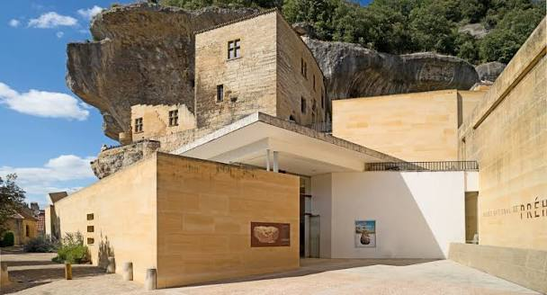

Musée national
de Préhistoire


⟹ Sites & Musées Emblématiques ⟸
Le musée est fondé en 1918 par le préhistorien Denis Peyrony, à l'initiative de qui l'État achète en 1913 l'ancien château des Eyzies, une forteresse médiévale adossée à la falaise qui domine le village. Il est officiellement inauguré en 1923 et devient rapidement une référence pour les chercheurs comme pour le grand public.

Les Eyzies-de-Tayac se trouvent au cœur de la vallée de la Vézère, surnommée la « vallée de l'Homme », qui concentre l'une des plus fortes densités de sites préhistoriques d'Europe, dont plusieurs sont inscrits au patrimoine mondial de l'UNESCO.
En 2004, un nouveau bâtiment conçu par l'architecte Jean-Pierre Buffi vient prolonger l'ancien château, littéralement encastré dans la paroi rocheuse qui surplombe le village. Le musée conserve aujourd'hui environ six millions d'objets, ce qui en fait l'une des plus riches collections de préhistoire au monde.
Le musée est fermé les 25 décembre et 1er janvier ainsi que tous les mardis en dehors de juillet-août.
Un espace de jeux préhistoriques, le « camp des petits sapiens », est en accès libre pour les enfants dans les collections.
Des livrets-jeux gratuits, à imprimer avant la visite, accompagnent les familles avec enfants de plus de 6 ans.
Aucune réservation n'est nécessaire pour une visite libre ; elle est en revanche recommandée pour les groupes.
Le musée est parfois surnommé le « Louvre de la préhistoire » en raison de la richesse exceptionnelle de ses fonds.
Le village des Eyzies-de-Tayac s'est vu attribuer le titre de « capitale mondiale de la préhistoire » du fait de la concentration inégalée de sites et d'abris ornés dans la commune et ses environs.
Le musée accueille toute l'année des archéologues et chercheurs du monde entier et organise régulièrement des conférences ouvertes au public.
La grotte de Font-de-Gaume, l'une des dernières grottes ornées polychromes encore visitées en Europe, se trouve à quelques minutes du musée.
L'abri du Cap Blanc présente une frise sculptée de chevaux grandeur nature, unique en son genre.
La grotte des Combarelles conserve plusieurs centaines de gravures pariétales.
Sarlat-la-Canéda se trouve à une vingtaine de kilomètres et Périgueux à environ 45 kilomètres.